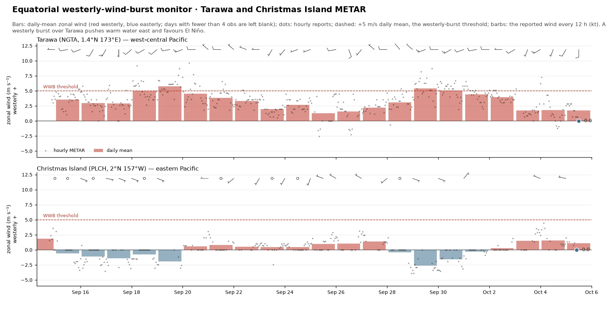

Daily, from NOAA OISST v2.1, anomalies against 1991–2020
El Niño monitor
Daily estimates of the Oceanic Niño Index and its warming-era replacement, RONI, ahead of the official monthly numbers — with every Niño region, the tropical background, the satellite view, the equatorial winds and the Southern Oscillation, and the subsurface ocean beneath it all. Computed from source data, updated every morning; one figure at a time, picked from the menu.
* Graded on RONI: |RONI| ≥ 0.5 El Niño or La Niña, ≥ 1.0 moderate, ≥ 1.5 strong, ≥ 2.0 very strong. CPC adopted RONI as its official ENSO index in February 2026, replacing ONI, whose fixed 30-year base cannot keep pace with tropical background warming — so grading on RONI follows CPC. What is not CPC's here: the value is computed from NOAA OISST v2.1 on a fixed 1991–2020 base, an estimate of CPC's official RONI, which uses ERSSTv6; and a single season is shown, where CPC requires five consecutive overlapping seasons past ±0.5 before declaring an episode. Nothing here is final. CPC revises its own ONI for up to two months after first posting; our newest season leans on a month that has not closed; and the OISST daily field is itself preliminary for about two weeks before it is archived as final.
← → step through the options · ↑ ↓ change figure · click a still to enlarge


The latest NOAA OISST v2.1 daily field, as anomalies vs 1991–2020 — the raw material behind every index on this page — animated over the last 90 days. Global on top, the tropical Pacific below with the Niño regions outlined; each frame is stamped with that day's ONI / tropical-mean / RONI readout. The panel's buttons also offer two mean-removed variants: the global-mean-removed field, which strips the uniform background warming and isolates the ENSO pattern, and tropics, tropical-mean removed — the whole 30°S–30°N belt with its own 20°S–20°N mean subtracted. That last one is RONI's arithmetic drawn as a map: the same subtraction the index makes at Niño-3.4, applied everywhere, so you can see which basins the Pacific is warm or cool against.
NOAA OISST v2.1 (PSL, NCEI fallback) · 1/4° · anomalies vs 1991–2020 · 90-day animation · daily
Every index is a daily area-weighted SST average, so today's value exists today — no waiting for the month to close. Niño-3.4 is the raw material of ONI; the daily relative Niño-3.4 subtracts the same day's 20°S–20°N tropical mean and rescales by the CPC/ECMWF σ-factor, so it reads on ONI's ±0.5 °C thresholds. There is no official daily RONI: RONI is a 3-month index, and what is drawn here is the daily quantity it is built from — useful because it moves today, not a published number. The 90-day mean is likewise an estimate of ONI, not ONI itself. Click legend entries to add Niño-1+2 / 3 / 4 and the tropical mean; drag to zoom, double-click to reset.
NOAA OISST v2.1 daily · cosine-weighted box means · base 1991–2020 · RONI scale: per-month σ(ONI)/σ(relative), CPC/ECMWF method
Every index is a daily area-weighted SST average, so today's value exists today — no waiting for the month to close. Niño-3.4 is the raw material of ONI; the daily relative Niño-3.4 subtracts the same day's 20°S–20°N tropical mean and rescales by the CPC/ECMWF σ-factor, so it reads on ONI's ±0.5 °C thresholds. There is no official daily RONI: RONI is a 3-month index, and what is drawn here is the daily quantity it is built from — useful because it moves today, not a published number. The 90-day mean is likewise an estimate of ONI, not ONI itself. Click legend entries to add Niño-1+2 / 3 / 4 and the tropical mean; drag to zoom, double-click to reset.
NOAA OISST v2.1 daily · cosine-weighted box means · base 1991–2020 · RONI scale: per-month σ(ONI)/σ(relative), CPC/ECMWF method
The same daily-OISST machinery pointed at the other basins. The PDO is the leading pattern of North Pacific SST variability — here as a daily index: each day's anomaly field (global-mean removed) projected onto the ERSST-derived PDO pattern and calibrated to NCEI's published monthly scale. The Indian Ocean Dipole is the west-minus-east tropical Indian Ocean gradient (DMI); events beyond ±0.4 °C shift Australian and East-African rainfall and often lean on ENSO. The Atlantic set tracks the Atlantic Niño (ATL3), the Tropical South Atlantic index, the subtropical dipole (SASD), and the Tropical North Atlantic (TNA) — the box average over 5.5–23.5°N, 57.5–15°W (Enfield convention). The TNA–TSA pair sets the Atlantic ITCZ's position: a warm TNA pulls it north, the classic Nordeste-drought and active-hurricane-season configuration.
NOAA OISST v2.1 daily · base 1991–2020 · PDO pattern: ERSST v5 North Pacific EOF, calibrated to NCEI over 1950–present (r = 0.96) · DMI: Saji boxes · SASD: Morioka poles
NASA JPL's MUR analysis blends infrared, microwave and in-situ SST onto a ~1 km grid — fine enough to resolve the tropical instability wave cusps rolling along the cold-tongue front, the Galápagos wake, and the Peruvian coastal upwelling that the 0.25° OISST maps above smooth over. One frame per day from 1 April 2026 — just before this event's onset (sustained RONI ≥ +0.5 from 21 May) — with a colour range fixed across the whole sequence, so the eastern Pacific visibly warms while the instability waves ripple the front. Click a frame to enlarge it. MUR interpolates under persistent cloud: treat the finest structure as analysis, not direct observation.
NASA JPL MUR SST v4.1 (GHRSST L4) · via NOAA CoastWatch ERDDAP · ~1–2 day latency · daily
The Niño-3.4 box temperature itself, not its anomaly, from NASA JPL's MUR v4.1 analysis, against MUR's own day-of-year climatology (band = p10–p90) and against NOAA OISST v2.1. Absolute rather than anomaly because the Niño-3.4 seasonal cycle is ~2 °C peak-to-peak and an anomaly plot throws it away; here you can read "how warm is it" and "how unusual is that" at once.
This is an independent check, not a second copy of the OISST index: MUR is a GHRSST foundation SST (below the diurnal thermocline) built from a different sensor mix, while OISST v2.1 is a bulk SST anchored to drifting buoys. A steady offset between them is a property of those definitions; the lower panel exists so you can see when the offset moves, which would mean the analyses are disagreeing about the ocean rather than about their own conventions. The offset is small — a few hundredths of a degree with a spread under 0.1 °C; the figure subtitle carries the current value — and they agree closely.
Note: MUR starts in June 2002, so its climatology is 2003–2022. MUR departures are therefore not comparable with the OISST anomalies elsewhere on this site, which use 1991–2020.
NASA JPL MUR v4.1 (GHRSST L4) via NOAA CoastWatch ERDDAP · 5°S–5°N, 170°W–120°W, cos-lat weighted · ~2-day latency
The clouds behind the OLR Hovmöller. NOAA blends GOES-East/West, Himawari and Meteosat into the GMGSI global longwave-IR mosaic on a regular lat/lon grid, so the field is seamless and georeferenced with no stitching or satellite-switch parallax. Looping the last 72 hours; white is cold cloud tops (deep convection). Choose the tropical Pacific crop, or the Americas from southern Mexico and the Caribbean to Tierra del Fuego, spanning the east Pacific and the tropical Atlantic.
NOAA GMGSI longwave-IR global mosaic (GOES-E/W + Himawari + Meteosat) · McIDAS brightness-temperature calibration · hourly, rolling 72 h
150 years of the Southern Oscillation, with today marked against the records. Top: the Bureau of Meteorology's monthly Troup SOI computed one way from 1876 to the present — monthly (light) and 3-month mean (bold), with dotted record lines: the all-time monthly extremes were set in Apr 1905 (−42.6) and Aug 1917 (+34.8). Middle: the consistent daily record — LongPaddock's daily Troup index (10·(ΔP − m)/σ, ΔP = Tahiti − Darwin MSLP, fixed 1887–1989 base), June 1991–present, as 30-day and 90-day running means with their own record max/min lines (1997–98 holds the 30-day minimum; 2010–11 the positive records). Bottom: the last 24 months with raw daily values as bars. Sustained values below −8 are the classic Troup El Niño threshold; the record lines show at a glance how the current excursion ranks in a century and a half of data.
Queensland Govt LongPaddock / BoM daily Troup SOI · fixed 1887–1989 base · updated each cycle
NOAA PSL's Multivariate ENSO Index v2 is the leading combined-EOF of five tropical-Pacific fields (sea-level pressure, SST, surface zonal and meridional wind, and OLR), but it is published only as an overlapping bimonthly value with a roughly five-week lag. This is a daily nowcast of it: a regression of the published MEI.v2 onto freely-available daily ENSO components (the Niño-3.4 SST anomaly, the Southern Oscillation Index, and the equatorial 850-hPa zonal wind), driven forward each day. The grey steps are the official bimonthly MEI.v2; the red line is the daily estimate, with a ±0.30 leave-one-year-out cross-validation band (the fit reproduces MEI.v2 at R = 0.94). The model is SST-weighted, so during a fast SST-led transition it can lead MEI's slower atmospheric components.
Regression on NOAA OISST Niño-3.4 · SOI (BoM) · ERA5 eq-u850 · target: NOAA PSL MEI.v2
A longitude × time Hovmöller of deep convection along the equator. NOAA's interpolated-OLR product ended in 2022, so this derives an OLR proxy in real time from the GMGSI global longwave-IR satellite mosaic: the IR brightness temperature (cold cloud tops) is converted to outgoing longwave radiation, and the 5°S–5°N zonal mean is stacked over time. Yellow to red is low OLR (deep convection); blue is high OLR (suppressed or clear sky). An eastward (top to bottom-right) tilt is the MJO propagating east; convection parked at the dateline reflects the El Niño-shifted warm pool. Newest day at the bottom.
NOAA GMGSI longwave-IR global mosaic · McIDAS T_b + Ohring-Gruber OLR · 5°S–5°N daily mean
A longitude × time Hovmöller of the equatorial outgoing-longwave-radiation (OLR) anomaly, averaged 5°S–5°N around the globe. OLR is derived in real time from the GMGSI longwave-IR mosaic (McIDAS brightness temperature to OLR), with the anomaly taken against NOAA's interpolated-OLR daily climatology (1979–2022). The shaded field is the total anomaly: green is low OLR (deep convection), brown is high OLR (suppressed).
Each overlaid component is isolated from that anomaly field and contoured at its convective (solid) and suppressed (dashed) phase. Kelvin, MJO and equatorial Rossby are Wheeler–Kiladis wavenumber–frequency bandpass filters of the anomaly (2-D FFT in longitude and time): Kelvin is eastward wavenumber 1–14, period 2.5–30 d, equivalent depth 8–90 m; MJO is eastward wavenumber 1–5, period 30–96 d; ER is westward wavenumber 1–10, period 9.7–48 d. Low-frequency is a 120-day Lanczos low-pass in time with the zonal mean removed.
GMGSI longwave-IR proxy · Wheeler–Kiladis k–ω filtering (eq. depth 8–90 m) · climatology NOAA interp-OLR 1979–2022
Below the surface, El Niño travels in oceanic Kelvin waves. A westerly wind burst in the western Pacific launches a downwelling wave: a bulge of warm water, a few centimetres of sea level and tens of metres of thermocline, that runs east along the equator at about 2.5 m/s, crossing the basin in roughly two months, and warms Niño-3 and the South American coast when it arrives. Easterly surges launch the cold, upwelling mirror image. Satellite altimetry sees each wave as a sea-level bump moving east.
Along the equator (left panel): sea level anomaly 2°S–2°N, with the Kelvin-band part in black (eastward, 1.5–3.5 m/s, 15–150 days); waves are streaks sloping down to the right. Each crest in the basin today is followed back through the record to measure its own speed, then projected east (dashed) to Niño-3 (120°W) and the coast (90°W), with the arrival dates listed underneath. Right panel: the 10 m zonal wind anomaly along the equator that launches them, observed then forecast. The broad red field is the El Niño itself, which the filter removes; the Kelvin part is a few centimetres riding on it.
Map: the same sea level over 15°S–15°N every second day for the last 200 days, with each crest marked on the equator. The arrival dates assume a wave keeps its speed and strength; a new wind burst, or the wave reflecting and dispersing near the coast, changes them.
Sea level: NOAA CoastWatch blended altimetry (Sentinel-3A/B, CryoSat-2, Jason-3, SARAL), daily, sampled at 0.5°, anomaly against its own 2017–2025 mean, trend and seasonal cycle · wind: NCEI Blended Sea Winds v2, then AIFS-ENS 0-h analyses, then the AIFS-ENS 50-member mean forecast (ECMWF open data, CC BY 4.0); anomalies against ERA5 1991–2020 · updated each 00/12Z cycle; altimetry runs one to two days behind
A convectively coupled Kelvin wave is an eastward-moving pulse of tropical convection, 10–20 m/s (roughly 1,000–1,700 km a day), that crosses a basin in about a week. Its clearest large-scale footprint is in 200 hPa velocity potential: upper-level divergence (green) over the active, rainy phase and convergence (brown) over the suppressed phase. This tracker filters that field to the Kelvin band and draws where the waves are, through the analysis and the AIFS-ENS forecast.
Map, day by day: the Kelvin-filtered anomaly, ten days of analyses then each forecast day to day 15; a K marks each active crest on the equator, and grey contours give the unfiltered anomaly (the MJO and the El Niño background) for context. Along the equator: the same field averaged 5°S–5°N as a Hovmöller, time running down; a Kelvin wave is a green streak tilting down to the right, and the forecast carries each streak across the analysis line.
The forecast is the 50-member ensemble mean, so a wave the members place differently fades with lead rather than being shown with false confidence. Filtering needs a record, so the forecast is joined to the analyses and the end of the record is padded with a ramp to zero; the last forecast days therefore read weaker than they may be. Poleward of 15° the filtered field is faded out: Kelvin waves are trapped near the equator and what the filter finds there is not one. The OLR-based trackers alongside it show the same waves in observed cloudiness.
ECMWF AIFS-ENS open data (CC BY 4.0): 0-h analyses (00 and 12 UTC, averaged per day) and the ensemble-mean u, v at 200 hPa to day 15 · velocity potential by spherical harmonics (lmax 42) · anomalies against ERA5 1991–2020 with its trend · Kelvin band: eastward wavenumbers 1–14, periods 2.5–20 days, equivalent depths 8–90 m (Wheeler & Kiladis 1999) · updated each 00/12Z cycle
Each wave isolated in its own panel — the Kelvin-filtered (5°S–5°N) and equatorial-Rossby-filtered (15°S–15°N, n=1) OLR anomaly as shading — with the active enhanced-convection packets tracked: the band's recent phase speed is fitted by day-to-day lag correlation of the filtered field, today's packet centres are located, and each characteristic is extrapolated ahead at that speed (dotted line). Below the dashed today-line the shading is a true forecast: the AIFS-ENS ensemble-mean precipitation (as a pseudo-OLR, standardized against an ERA5 1991–2020 band climatology) is appended to the record and run through the same Wheeler–Kiladis filter, so the wave field continues with the model's dynamics — where the dotted constant-speed line and the model streaks agree, confidence in the arrival time is high.
Same GMGSI OLR proxy + Wheeler–Kiladis filters as above · phase speed from lag-1-day circular cross-correlation (last 15 days) · forecast strip: AIFS-ENS ens-mean precip pseudo-OLR, identically filtered (falls back to constant-speed extrapolation if no cycle is cached)
Copernicus Marine WIND_GLO_PHY_L4_NRT (scatterometer / ASCAT) · ~1–2 day latency · updated daily · drag the slider for recent days
Longitude × time strip of the daily-mean surface zonal wind averaged 5°S–5°N, 150°E–90°W, from the same gap-filled scatterometer (ASCAT) L4 product as the map above. Red is westerly (El Niño-favorable), blue is easterly (the trade winds). Westerly-wind bursts (red) over the warm pool force the downwelling Kelvin waves and eastward surface-current surges seen on the subsurface page. Newest day at the bottom.
Copernicus Marine WIND_GLO_PHY_L4_NRT (scatterometer / ASCAT) · 5°S–5°N daily mean · rolling ~9 months · updated daily
The Southern Oscillation Index is a Troup standardisation of the Tahiti-minus-Darwin sea-level-pressure difference. It is published only monthly, and even LongPaddock's daily version lags 1–2 days. This estimates it in near-real time from the hourly QNH in the Darwin (YPDN) and Tahiti / Faa’a (NTAA) airport METARs, updated hourly by a GitHub Action.
The exact formula (Troup, 1965):
SOI = 10 × ( Pdiff − Pdiff ) ÷ σdiff
where Pdiff = mean-sea-level pressure at Tahiti minus Darwin (monthly mean), Pdiff is the long-term average of that difference for the given calendar month, and σdiff its standard deviation, both taken over the 1887–1989 base period. The factor of 10 is Troup’s scaling (so the index mostly falls within ±35). Crucially, σdiff is the spread of monthly values (≈1.3–2.1 hPa), not the much wider day-to-day spread; the exact monthly mean and σ are recovered by regressing LongPaddock’s published SOI against its own Tahiti−Darwin pressure record, then applied to the live METAR pressures.
The grey line is the published LongPaddock daily SOI; the bold red line is the 24-hour-mean estimate, nudged onto the LongPaddock scale, which runs a day or two ahead of it. The faint blue line is the raw hourly SOI, very noisy (the semidiurnal pressure tide, passing weather, and 1-hPa METAR rounding). Negative is El Niño-favorable.
Darwin (YPDN) + Tahiti (NTAA) METAR via aviationweather.gov · Troup normals & calibration from LongPaddock (BoM 1887–1989 base) · updated hourly
Extending the observed SOI forward: the same Troup SOI (the standardized Tahiti−Darwin sea-level-pressure difference), here forecast from the combined AIFS-ENS + IFS-ENS ensemble (about 100 members). Observed values are from LongPaddock (Queensland Govt / BoM); the forecast is the Tahiti−Darwin MSL from the ensembles, bias-corrected to the recent observed level. Bold lines are the 30-day running SOI; the faint daily series and shaded 10–90% band show the day-to-day spread. Sustained negative SOI (below −7) is El Niño-favorable; sustained positive (above +7) is La Niña-favorable.
LongPaddock daily SOI (BoM, 1887–1989 base) · forecast: ECMWF AIFS-ENS + IFS-ENS MSL · updated each 00/12Z cycle
Westerly wind bursts (WWBs) over the west-central equatorial Pacific are a key El Niño trigger: the easterly trades briefly reverse to westerly, pushing warm water and convection eastward and forcing downwelling Kelvin waves. Tarawa / Bonriki (NGTA, 1.4°N 173°E) sits in that zone, so its hourly airport wind is a live proxy, with Christmas Island (PLCH, far to the east) shown for contrast. The arrows show the latest wind at each station (red is westerly, blue is easterly); the chart tracks the zonal wind component at Tarawa, where a sustained red excursion is an active WWB.
Tarawa / Bonriki (NGTA) + Christmas Is. / Kiritimati (PLCH) METAR via aviationweather.gov · updated hourly
Tarawa’s daily airport wind from 1 April onward through recent El Niño onset years, 2015–16 (very strong) and 2023–24 (weaker), against the current year, from the Iowa Environmental Mesonet METAR archive. Both panels are a 7-day running mean of the hourly obs: top is zonal wind (westerly positive); bottom is the fraction of each day with westerly winds. In a developing El Niño the easterly trades weaken and westerly bursts become more frequent, so both climb from the cold-state baseline.
Tarawa (NGTT/NGTA) METAR · Iowa Environmental Mesonet ASOS archive · monthly zonal wind & westerly fraction · refreshed daily
Forecast 10 m zonal-wind anomaly (5°S–5°N), longitude × forecast day, from the AIFS-ENS (AI) and ECMWF IFS-ENS (physics) ensemble means versus the ERA5 1991–2020 climatology. Westerly (red) anomalies along the equator favor El Niño development; easterly (blue) anomalies favor La Niña. Agreement between the AI and physics ensembles raises confidence.
ECMWF AIFS-ENS & IFS-ENS (open data) · anomaly vs ERA5 1991–2020 · updated each 00/12Z cycle
Depth–longitude cross-section along the equator (0°N) from the TAO/TRITON moored-buoy array: temperature (top) and its anomaly versus the 1991–2020 average (bottom), 5-day smoothed. The thermocline (here the 26°C and 28°C isotherms, with the 20°C isotherm — the standard thermocline proxy — in heavy solid black) tilts upward toward the east, and subsurface anomalies along it often lead the surface ENSO signal. The 10°C isotherm is drawn dashed blue whenever it enters the section.
NOAA/PMEL TAO/TRITON (DISDEL) · base 1991–2020 · 120-day animation, latest shown
Equatorial Pacific upper-ocean (0–300 m) temperature anomaly — a heat-content proxy that leads the surface — through each event's development year and the next, current (bold red) over 1997, 2015 and 2023. The subsurface warm reservoir is the fuel for El Niño. De-trended removes the 1991–2020 climate trend so the four events sit on a common baseline; the net 0–300 m effect is modest because the subsurface warming and cooling trends largely cancel in the column average.
NOAA/PMEL TAO/TRITON moorings · anomaly vs 1991–2020 · coverage varies by year
Equatorial depth×longitude temperature anomaly at the same phase (~the latest data week) of each event. The eastward-deepening warm anomaly along the thermocline is the classic El Niño subsurface signature. De-trended reshapes the pattern more than it does the column-mean heat content above, because the trend itself has depth×longitude structure (west-Pacific subsurface warming, eastern-thermocline cooling). TAO coverage varies by year (triangles mark reporting moorings), so 1997 and 2023 have missing longitudes.
NOAA/PMEL TAO/TRITON moorings · anomaly vs 1991–2020 · 14-day mean · coverage varies by year
Daily surface-current fields over the last month for the equatorial Pacific (15°S–15°N, 130°E–80°W) from the Copernicus Marine 1/12° ocean model: speed shaded (blue slow to red fast) with streamlines tracing the flow. The westward South Equatorial Current straddles the equator, the eastward North Equatorial Counter Current sits near 5–10°N, and Tropical Instability Wave eddies ripple along the cold tongue.
Copernicus Marine GLOBAL_ANALYSISFORECAST_PHY_001_024 (1/12°) · surface (~0.5 m)
Depth–longitude slice along the equator (1.5°S–1.5°N), 160°E–90°W, from the Copernicus Marine 1/12° global ocean model: zonal current (shaded, eastward in red) with the 20°C isotherm (the thermocline) in black. It resolves the Equatorial Undercurrent, the eastward subsurface jet at about 50–200 m, the surface-westward South Equatorial Current, and the east–west thermocline tilt. The loop is pinned to start 1 March 2026 and grows daily, so downwelling Kelvin waves (a deepening of the 20°C isotherm with an eastward current pulse) can be followed across the basin.
Copernicus Marine GLOBAL_ANALYSISFORECAST_PHY_001_024 (1/12° Mercator) · equator 1.5°S–1.5°N mean · since 1 Mar 2026
Longitude × time strip of the daily surface zonal current averaged 2°S–2°N, 150°E–90°W (same Copernicus Marine model). Red is eastward, blue is westward. The equatorial surface normally flows westward (the trade-driven South Equatorial Current); as El Niño matures, downwelling Kelvin waves drive eastward surges into the east Pacific. Newest day at the bottom.
Copernicus Marine GLOBAL_ANALYSISFORECAST_PHY_001_024 (1/12°) · 2°S–2°N surface mean · rolling ~9 months
The Equatorial SOI is CPC’s zonal pressure index for the equatorial Pacific: the standardised anomaly of the area-mean sea-level pressure over the eastern equatorial Pacific (5°N–5°S, 130–80°W) minus that over Indonesia (5°N–5°S, 90–140°E). It measures the pressure gradient that drives the equatorial trades directly, on the equator, where the classic Tahiti–Darwin SOI samples two stations well off it; the two agree closely in the mean but the equatorial index is less noisy and more physically tied to the Walker circulation. Negative values go with El Niño.
Here the box means are taken from the AIFS-ENS and IFS-ENS sea-level pressure forecasts (the unperturbed member and the perturbed members, days 1–15), standardised with ERA5 1991–2020 per-month statistics of the monthly-mean box difference, then placed on CPC’s scale by a linear fit to CPC’s published monthly series over 1991–2020 (r = 0.94, slope 0.94). The bars are CPC’s monthly values; the black tail is the day-1 ensemble mean archived each cycle, a stand-in for a daily analysis until a proper one is added. Daily values scatter more than the monthly index they are drawn against.
NOAA CPC Equatorial SOI (reqsoi.for) · ECMWF AIFS-ENS and IFS-ENS MSL (open data, CC BY 4.0) · ERA5 1991–2020 standardisation · updated each 00/12Z cycle
ECMWF SEAS5’s 51 members carried through the coming six months as the Southern Oscillation Index (Tahiti minus Darwin) and CPC’s Equatorial SOI (east-minus-west equatorial box pressure), in seasonal standard deviations. The calibrated view regresses CPC’s observed index on the model’s ensemble mean over the 1993–2016 hindcast, lead by lead: the mean is shrunk or stretched to the model’s demonstrated skill and the band is the residual spread (10–90% and 25–75%), so a lead with no skill shows climatology rather than a confident wrong answer. The raw view is the members as they come. CPC’s last four monthly values are drawn in black.
ECMWF SEAS5 via the Copernicus Climate Data Store (issue from the SEAS5 page) · NOAA CPC SOI and Equatorial SOI · calibration: 1993–2016 hindcast, 24 years
How much the season’s temperature or rainfall changes for each degree of Niño-3.4 warming: the slope of a linear regression at every grid point, in K per K (temperature) and % of normal per K (precipitation). It is the ENSO signal with the event size divided out, the counterpart of the class composites next to it.
CMIP6: for each of 429 historical members the seasonal anomalies and the same season’s Niño-3.4 index are taken from the member’s own quadratic trend, the slope is fitted per grid point, members are averaged within a model and the 16 models are weighted equally. Only significant results are drawn. A CMIP6 map is shaded where it is robust: an across-model t-test (each of the 16 models counts once) passes a Benjamini–Hochberg false-discovery rate of 10 % over the map and at least 80 % of the models agree on the sign. Everything else is left blank. Precipitation is tested in mm/day and shown as a percentage of the normal; cells whose normal is under 0.3 mm/day are hatched and not scored.
Observed: ERA5 temperature (67 winters from 1960) and GPCP rainfall (47 from 1980) regressed on CPC’s ONI, the field’s quadratic trend removed; shaded where the slope’s t-test passes a false-discovery rate of 10 % over the map.
In December–February the models agree over 86 % of the land: the classic pattern of a warm north (Alaska, western Canada) and a cool, wet Gulf Coast and Southeast, warm northern South America and a dry Amazon and Venezuela. The observed record, a single realisation, passes its test over about half of the land for temperature (67 winters) and a third for rainfall (47): the same warm Alaska and Canada, cool Texas and Gulf Coast and warm tropical belt.
The 500 hPa height option draws a flat Northern Hemisphere map (0–90°N, centred on the Pacific) from 147 of the members, up to 10 per model in all 16 models: every Pangeo zg store packs its 19 pressure levels into one chunk, so the level costs the full 3-D read (167 GB here), and since the tests count each model once, 10 members pin each model’s mean. ERA5 500 hPa height 1959–2026 is the observed side; thin contours give the seasonal mean height every 100 m for orientation. The winter wave train is in the right place, a little west and weaker in the models. The CMIP6 and ERA5
regression maps correlate 0.85 over 20–90°N in December–February (0.71, 0.66 and 0.54 in the other
seasons). The Aleutian low is centred at 163°W in the median model (172–145°W across models) against
153°W observed, and the Canadian ridge at 107°W against 94°W observed — the observed centres sit east
of 81 % and 88 % of the models, inside their spread — and the observed low is deeper (−38 against
−28 gpm per K). See Wave train position.
CMIP6 historical runs, 1950–2014, via the Pangeo archive on Google Cloud: ACCESS-ESM1-5, CanESM5, CESM2, CNRM-CM6-1, CNRM-ESM2-1, EC-Earth3, GISS-E2-1-G, GISS-E2-1-H, INM-CM5-0, IPSL-CM6A-LR, MIROC6, MIROC-ES2L, MPI-ESM1-2-HR, MPI-ESM1-2-LR, MRI-ESM2-0, NorCPM1 (429 members) · ERA5 2 m temperature (Copernicus C3S), 1960–2026 · GPCP v2.3 monthly precipitation (NOAA NCEI), 1980–2026 · CPC Oceanic Niño Index · all on a 2.5° grid, 60°S–75°N, 170–30°W · static reference, redrawn only when the analysis changes
The average season in each class of event minus the average neutral season, from CMIP6. The classes nest as the usual definitions do: El Niño is a same-season Niño-3.4 anomaly of at least +0.5 K, strong +1.5 K, super +2.0 K; La Niña −0.5 K and strong La Niña −1.5 K; neutral within ±0.5 K, each member’s own trend removed. The models supply what the observed record cannot: in December–February 8,462 El Niño and 9,428 La Niña seasons, 2,476 strong and 1,165 super El Niños (the real world has had 3).
Only significant results are drawn. A CMIP6 map is shaded where it is robust: an across-model t-test (each of the 16 models counts once) passes a Benjamini–Hochberg false-discovery rate of 10 % over the map and at least 80 % of the models agree on the sign. Everything else is left blank. Precipitation is tested in mm/day and shown as a percentage of the normal; cells whose normal is under 0.3 mm/day are hatched and not scored. Members are averaged within a model weighted by their number of events.
What the models agree on for a super El Niño winter (regional means): Gulf Coast −1.2 K and the Southeast −0.9 K, Quebec/Labrador +1.5 K, the Amazon +1.6 K; rain +36 % in the Southeast, +24 % in California, +38 % on the Peru/Ecuador coast, −28 % in Venezuela and −23 % in Central America.
The 500 hPa height option shows the same classes on a flat Northern Hemisphere map from 147 members (up to 10 per model; see the regression item). In a super El Niño winter the models deepen the Aleutian low by about 80 gpm near 147°W and raise heights by about 50 gpm over Hudson Bay.
CMIP6 historical runs, 1950–2014, via the Pangeo archive on Google Cloud: ACCESS-ESM1-5, CanESM5, CESM2, CNRM-CM6-1, CNRM-ESM2-1, EC-Earth3, GISS-E2-1-G, GISS-E2-1-H, INM-CM5-0, IPSL-CM6A-LR, MIROC6, MIROC-ES2L, MPI-ESM1-2-HR, MPI-ESM1-2-LR, MRI-ESM2-0, NorCPM1 (429 members) · ERA5 2 m temperature (Copernicus C3S), 1960–2026 · GPCP v2.3 monthly precipitation (NOAA NCEI), 1980–2026 · CPC Oceanic Niño Index · all on a 2.5° grid, 60°S–75°N, 170–30°W · static reference, redrawn only when the analysis changes
The same composite from observations: ERA5 temperature and GPCP rainfall in seasons with CPC’s ONI at or beyond ±0.5 K, minus neutral seasons, with the field’s quadratic trend removed. Shaded only where a Welch t-test of the class against neutral seasons passes a false-discovery rate of 10 % over the map.
Only El Niño and La Niña are drawn. The strong and super classes have at most 6 observed seasons in any season, too few to test, and a composite of three winters looks like a finding whether or not it is one — for those classes the CMIP6 maps stand in, and the Observed vs the models item asks whether the few real events are consistent with them. Where a class has fewer than 8 observed seasons in some season (La Niña rainfall in June–August has 5), the map says so and draws nothing.
The 500 hPa option uses ERA5 500 hPa height (1959–2026) with the same test.
CMIP6 historical runs, 1950–2014, via the Pangeo archive on Google Cloud: ACCESS-ESM1-5, CanESM5, CESM2, CNRM-CM6-1, CNRM-ESM2-1, EC-Earth3, GISS-E2-1-G, GISS-E2-1-H, INM-CM5-0, IPSL-CM6A-LR, MIROC6, MIROC-ES2L, MPI-ESM1-2-HR, MPI-ESM1-2-LR, MRI-ESM2-0, NorCPM1 (429 members) · ERA5 2 m temperature (Copernicus C3S), 1960–2026 · GPCP v2.3 monthly precipitation (NOAA NCEI), 1980–2026 · CPC Oceanic Niño Index · all on a 2.5° grid, 60°S–75°N, 170–30°W · static reference, redrawn only when the analysis changes
Lifecycle: CMIP6 winters whose December–February Niño-3.4 reached +2.0 K, followed from the June–August before the peak to the March–May after it, each minus the same seasons around neutral winters (1,153–1,165 events in 15 models). Beyond linear: the super composite minus what a straight line through all events predicts for an index that large — what the strongest events add to a scaled-up ordinary El Niño. In the models that extra is a warmer Great Lakes and Quebec and a colder Alaska in winter, more California and Southeast rain and a drier Mexico. North America by month: November to March in the same super winters, each calendar month from the member’s own trend.
Only significant results are drawn. A CMIP6 map is shaded where it is robust: an across-model t-test (each of the 16 models counts once) passes a Benjamini–Hochberg false-discovery rate of 10 % over the map and at least 80 % of the models agree on the sign. Everything else is left blank. Precipitation is tested in mm/day and shown as a percentage of the normal; cells whose normal is under 0.3 mm/day are hatched and not scored.
500 hPa. Beyond a scaled-up El Niño, the strongest events move the Aleutian low east and north: heights fall a further 35 gpm over the Gulf of Alaska (52°N 140°W) and rise 33 gpm near the dateline at 35°N, with a stronger ridge over Quebec — the circulation behind the models’ colder Alaska and warmer Great Lakes and Quebec in super winters. The models’ super El Niño Aleutian low (150°W on the mean map) sits where the three observed events put it (152°W).
CMIP6 historical runs, 1950–2014, via the Pangeo archive on Google Cloud: ACCESS-ESM1-5, CanESM5, CESM2, CNRM-CM6-1, CNRM-ESM2-1, EC-Earth3, GISS-E2-1-G, GISS-E2-1-H, INM-CM5-0, IPSL-CM6A-LR, MIROC6, MIROC-ES2L, MPI-ESM1-2-HR, MPI-ESM1-2-LR, MRI-ESM2-0, NorCPM1 (429 members) · ERA5 2 m temperature (Copernicus C3S), 1960–2026 · GPCP v2.3 monthly precipitation (NOAA NCEI), 1980–2026 · CPC Oceanic Niño Index · all on a 2.5° grid, 60°S–75°N, 170–30°W · static reference, redrawn only when the analysis changes
Is La Niña the mirror image of El Niño? The two class composites are rescaled to the same index size and added: a symmetric, linear response would sum to zero everywhere, so whatever survives is the part that does not flip sign. Positive means El Niño’s anomaly is the larger of the two (or both push the same way). In the models El Niño’s winter warmth over the Great Lakes outweighs La Niña’s cold there, La Niña’s Alaskan cold outweighs El Niño’s warmth, and strong La Niña dries Mexico more than strong El Niño wets it.
Only significant results are drawn. A CMIP6 map is shaded where it is robust: an across-model t-test (each of the 16 models counts once) passes a Benjamini–Hochberg false-discovery rate of 10 % over the map and at least 80 % of the models agree on the sign. Everything else is left blank. Precipitation is tested in mm/day and shown as a percentage of the normal; cells whose normal is under 0.3 mm/day are hatched and not scored.
The 500 hPa option shows the same sum for height on a flat Northern Hemisphere map.
CMIP6 historical runs, 1950–2014, via the Pangeo archive on Google Cloud: ACCESS-ESM1-5, CanESM5, CESM2, CNRM-CM6-1, CNRM-ESM2-1, EC-Earth3, GISS-E2-1-G, GISS-E2-1-H, INM-CM5-0, IPSL-CM6A-LR, MIROC6, MIROC-ES2L, MPI-ESM1-2-HR, MPI-ESM1-2-LR, MRI-ESM2-0, NorCPM1 (429 members) · ERA5 2 m temperature (Copernicus C3S), 1960–2026 · GPCP v2.3 monthly precipitation (NOAA NCEI), 1980–2026 · CPC Oceanic Niño Index · all on a 2.5° grid, 60°S–75°N, 170–30°W · static reference, redrawn only when the analysis changes
Is the real world consistent with the models? The observed composite of n events is placed among composites of n events drawn from the models — a model at random, then n of its events — 20,000 times for each region and 100,000 times for each grid point, giving a two-sided p. The regional list uses a false-discovery rate of 10 % within each season × class row of 20 regions; the maps use it over the whole map.
What passes: in the six observed strong El Niño winters the Ohio Valley averaged +2.1 K against a model mean of −0.4 K (99.9th percentile of the models’ 6-event draws) and the Great Lakes +3.1 K against +0.4 K (99.8th). Neither survives a false-discovery rate taken over the whole table of 20 regions × 4 seasons × 5 classes, so read them as the strongest candidates, not settled differences. Before the three super El Niños (September–November) the coast of Ecuador warmed beyond every model draw; at their peak, rainfall over Panama, Costa Rica and Caribbean Colombia fell short of the models at 6 grid points (and at one more in the open Atlantic). No region’s rainfall passes the regional test, so there is no rainfall table.
CMIP6 historical runs, 1950–2014, via the Pangeo archive on Google Cloud: ACCESS-ESM1-5, CanESM5, CESM2, CNRM-CM6-1, CNRM-ESM2-1, EC-Earth3, GISS-E2-1-G, GISS-E2-1-H, INM-CM5-0, IPSL-CM6A-LR, MIROC6, MIROC-ES2L, MPI-ESM1-2-HR, MPI-ESM1-2-LR, MRI-ESM2-0, NorCPM1 (429 members) · ERA5 2 m temperature (Copernicus C3S), 1960–2026 · GPCP v2.3 monthly precipitation (NOAA NCEI), 1980–2026 · CPC Oceanic Niño Index · all on a 2.5° grid, 60°S–75°N, 170–30°W · static reference, redrawn only when the analysis changes
East-based and central-Pacific El Niños are not the same event. Takahashi et al. (2011) showed that the first two patterns of tropical Pacific sea-surface temperature (EOFs over 10°S–10°N, 140°E–80°W) combine into two physically distinct indices: E = (PC1 − PC2)/√2, warming centred on the far eastern Pacific and the coast of Peru, and C = (PC1 + PC2)/√2, warming centred near the dateline. Here each CMIP6 member gets its own EOFs from its own monthly sea-surface temperature (own climatology and quadratic trend removed; the second pattern matches the observed one at a median pattern correlation of 0.83), and the signs are fixed against the observed ERSST v6 patterns. The indices are in standard deviations of the monthly index.
Views. East and Central: the season’s temperature or rainfall regressed on E and C together, so each map is one pattern with the other held fixed. East minus central: El Niño seasons with E > C minus those with C ≥ E, matched in Niño-3.4 strength (bins 0.5–1, 1–1.5, 1.5–2 and ≥ 2 K, each weighted by its smaller class), so the difference is the kind of event, not its size. Kug et al.’s (2009) test (standardised Niño-3 against Niño-4) gives the same difference maps to a pattern correlation of 0.96–0.99. Where events fall: the models’ El Niños and the observed ones on E and C.
What the models agree on (December–February, matched strength, regional means robust by the same test): an east-based El Niño is cooler over the southern and eastern US than a central one of the same size (US Southwest −0.23 K, Gulf Coast −0.24, Southeast −0.25, Ohio Valley −0.28), colder in Alaska (−0.36) and warmer over Quebec and Labrador (+0.45); it is drier in the US Southwest (−8 %) and wetter on the Peru/Ecuador coast (+9 %). Per standard deviation, the central index warms Alaska (+0.8 K) and wets Mexico and the Southwest; the eastern index cools the Gulf Coast and warms Quebec. In the models 70 % of super El Niños (Niño-3.4 ≥ 2 K in winter) are east-based, against 38 % of all El Niños.
Observed. 1982/83 and 1997/98 were strongly east-based (E +3.6 and +3.8, C about +0.5); 2015/16 was mixed (E and C both +1.8); 2009/10 was central. Summer 2026 is east-based: June–August E +2.3, C +1.2, the largest summer E since 1997 (+3.3), and August alone E +3.1. With no detrending (a 1991–2020 base) the numbers move to E +2.5, C +1.6: the placement does not depend on the trend. The observed record has 5 east-based and 17 central El Niño winters since 1960 — too few east-based ones to test the difference directly, so the observed side is the E/C regression. A CMIP6 map is shaded only where it is robust: an across-model t-test (each of the 16 models counts once) passes a Benjamini–Hochberg false-discovery rate of 10 % over the map and at least 80 % of the models agree on the sign. Observed maps are shaded where the regression coefficient’s t-test passes the same false-discovery rate. Blank = not significant.
500 hPa. The two indices place the ridge differently. East-based warming (E) puts the Canadian ridge over eastern Canada (78°W in the models, 82°W observed); central-Pacific warming (C) puts it over western Canada (117°W and 112°W) with the Aleutian low further south. East minus central at matched strength: +16 gpm over Labrador and −14 gpm over the southern US, robust over 20 % of 20–90°N in winter — the height pattern behind the warmer Quebec and cooler south of east-based events.
CMIP6 historical runs, 1950–2014, 16 models, 429 members, via the Pangeo archive on Google Cloud (Amon ts, tas, pr) · ERSST v6 (NOAA NCEI) · ERA5 2 m temperature (Copernicus C3S), 1960–2026 · GPCP v2.3 precipitation (NOAA NCEI), 1980–2026 · CPC ONI · static reference, redrawn only when the analysis changes
Do the models put the ENSO wave train in the right place? Two centres are tracked on the 500 hPa height maps: the Aleutian low (the minimum over 30–65°N, 150°E–130°W) and the Canadian ridge (the maximum over 40–70°N, 130–60°W), each as the area-weighted centroid of the strongest 20 % of the anomaly, on the regression per K of Niño-3.4 for ERA5 (1959–2026, CPC’s ONI) and for each CMIP6 model, and on the super El Niño composites. The positions are descriptive: ERA5 is one realisation and the CMIP6 range is the spread between models, so no test is implied.
Result. In winter the patterns correlate 0.85; the models’ Aleutian low (median 163°W) and Canadian ridge (107°W) sit 10–13° west of the observed ones (153°W, 94°W), and their low is weaker (−28 against −38 gpm per K). That is the same direction as the models’ El Niño rainfall, which sits 13° west of the observed in every model. But across models the two are not significantly linked: a model’s super El Niño Aleutian low moves only 0.45° per degree of its rain centroid (r = +0.33 across 14 models, p = 0.25). The spread in where models put the low is mostly not about where they rain, and in the super El Niño composite the models’ low (150°W) sits where the three observed events put it (152°W). The westward offset is a feature of the models’ ordinary, linear El Niño response.
CMIP6 historical, 16 models, 147 members (Amon zg 500 hPa, up to 10 per model) via
the Pangeo archive on Google Cloud · ERA5 500 hPa height (Copernicus C3S) · GPCP v2.3 (NOAA NCEI) and
CMIP6 pr for the rain centroids · CPC ONI
Verdict: no significant forced response in the lagged or AMIP analyses; the pacemaker runs bound it at about 20 gpm per standard deviation or less. The familiar PDO impact maps are mostly the atmosphere driving the ocean.
Why the usual maps mislead. Put a winter’s weather next to the same winter’s North Pacific sea-surface temperature and a strong pattern appears: a deep Aleutian low, a warm Alaska, a cool Southeast. But the arrow mostly points the other way. A deep Aleutian low blows cold air over the central North Pacific and warm air up the coast, and within weeks those winds and heat fluxes build exactly the sea-surface pattern that defines a positive PDO (Frankignoul & Hasselmann 1977; Newman et al. 2016). So the same-season map mostly shows the weather that made the PDO. To see what the ocean does back to the atmosphere, the ocean has to come first in time, or be imposed.
Four ways to measure the forced response (ENSO removed from the PDO as elsewhere on this page; winter, 500 hPa height, per standard deviation of the monthly ENSO-free PDO):
- Lagged. 147 CMIP6 members of 16 models: winter heights regressed on the preceding autumn’s PDO with the autumn Aleutian low and Niño-3.4 (autumn and winter) held fixed, so persistence of the atmosphere and of ENSO is not counted as a response.
- Frankignoul lagged covariance (Frankignoul, Czaja & L’Heveder 1998): cov(height, PDO two or three months earlier) divided by the PDO’s own lagged covariance. At one month it still sees the atmosphere’s own persistence (and looks like the co-variability map), so the two- and three-month estimates are used.
- AMIP: 26 members of 14 models run on the observed 1979–2014 sea-surface temperature, where the atmosphere cannot drive the ocean, regressed on the observed ENSO-free PDO with Niño-3.4, Indian Ocean and west-Pacific warm-pool indices alongside.
- Pacemakers: the DCPP component C experiments (Boer et al. 2016) that impose the Pacific decadal pattern only north of the tropics, positive in one set of runs and negative in another; half their difference is the response. Two models published the fields (IPSL-CM6A-LR, 10 runs a side; HadGEM3-GC31-MM, 12 and 11), scaled here by the PDO index their imposed SST projects onto (0.36 and 0.22).
Results, Aleutian box (30–65°N, 160°E–140°W). Same-winter co-variability −15.6 gpm per standard deviation in the models (16/16) and −15.9 in ERA5. Forced: lagged −0.9 (p 0.07), Frankignoul −0.7 and +0.6 at two and three months (p 0.27, 0.49), AMIP +0.7 (p 0.49; opposite in sign and pattern to the co-variability), IPSL pacemaker −13 (95 % interval −25.5 to −0.5, no grid point passes the map test), HadGEM3 pacemaker −3 (−20 to +14). One standard deviation is about 0.44 K at the pattern’s centre, so even the pacemaker bound is near the 10–20 gpm per K that atmospheric models have given for extratropical SST anomalies (Kushnir et al. 2002). HadGEM3’s significant cells are tropical height rises from the slight tropical warming its runs allowed, not a North Pacific response.
Which way the influence runs. In the models the autumn PDO does not improve an out-of-sample prediction of the winter Aleutian low (median change −1.9 %, a chance 5 % of members significant), while the autumn Aleutian low does predict the winter PDO beyond its own persistence (16 of 16 models, p < 0.001). In ERA5’s 67 winters neither direction passes (p 0.88 and 0.17).
Tests. Maps are shaded only where significant: CMIP6 across-model t-test, Benjamini–Hochberg false-discovery rate 10 % over the map, and ≥ 80 % of the models agreeing on the sign; ERA5 OLS t-tests; pacemakers a Welch t-test of the positive against the negative winters. All views share one colour scale.
CMIP6 historical (Amon ts, zg), amip (zg, psl,
tas, pr) via the Pangeo archive on Google Cloud · DCPP-C dcppC-ipv-NexTrop via ESGF
(CEDA) · ERA5 500 hPa height (Copernicus C3S) · ERSST v6 and the NCEI PDO index (NOAA) · Newman
et al. 2016, J. Climate 29, 4399–4427 · Frankignoul & Hasselmann 1977, Tellus 29, 289–305
· Frankignoul, Czaja & L’Heveder 1998, J. Climate 11, 2310–2324 · Kushnir et al. 2002,
J. Climate 15, 2233–2256 · Boer et al. 2016, Geosci. Model Dev. 9, 3751–3777
The one forced effect every method agrees on is warmer coastal air. When the North Pacific next to North America is warm, the air over Alaska’s south coast and the Pacific Northwest and California coasts is warmer in the following month: per standard deviation of the coastal sea-surface temperature (about 0.53 K, 30–55°N, 135–120°W), +0.09 to +0.19 K on the Pacific Northwest coast in every month, +0.06 to +0.13 K on the California coast in most months and +0.08 to +0.17 K on Alaska’s south coast from March to October in the coupled models; +0.25 to +0.38 K on the West Coast from September to December and +0.17 to +0.32 K on the Alaska coast from March to September when the observed SST is prescribed (AMIP); and the same sign in both pacemaker models (up to +0.5 to +0.9 K per standard deviation of the imposed pattern). The physics is local and direct: onshore winds carry air that has just crossed the warm or cold water. Through the ENSO-free PDO, whose pattern is warm along the coast when positive, the signal is the Alaska coast: +0.07 to +0.17 K from March to September in the coupled models, +0.14 to +0.24 in AMIP.
Everything else: no significant forced response, or no agreement. Precipitation has no forced response that AMIP confirms (the coupled models give a little more winter rain on the California and Pacific Northwest coasts with a warm coastal ocean, +0.1 to +0.2 mm/day per standard deviation, but AMIP passes only in scattered months: the coast in April, inland California and the Pacific Northwest in January). Inland, the coupled models warm the Plains, Great Lakes and the South slightly in winter and spring with a warm coastal ocean, while AMIP cools the Great Lakes and Northeast in March (−0.3 to −0.4 K) and the Southeast and Gulf in early summer: the methods disagree, so no inland effect is claimed. The 500 hPa height response is under 6 m per standard deviation in the Aleutian box in every month and method. The observed record (ERA5 and GPCP with the same lagged design) passes its test in no region, and over at most 1 % of the land in any month.
Why not the familiar maps. The same month’s co-variability (the last option, labelled NOT the effect) shows a warm Alaska by up to +1.2 K per standard deviation and cool eastern states — five to ten times the forced coastal signal. That map is mostly the atmosphere building the sea-surface pattern (see The PDO’s forced effect).
Methods. Coupled (147 CMIP6 members, 16 models, 1950–2014): each month’s field regressed on the coastal SST or the ENSO-free PDO of the month before, holding fixed the month-before atmosphere (the three leading Pacific–North America 500 hPa height patterns), Niño-3.4 (both months) and each grid cell’s own value the month before, so neither atmospheric nor land-surface persistence counts as a response. AMIP (26 members, 14 models, 1979–2014): the observed SST is prescribed, so the atmosphere cannot drive it; each month regressed on the same month’s observed index with Niño-3.4, Indian Ocean and west-Pacific warm-pool indices alongside. Pacemakers (DCPP-C NexTrop, IPSL-CM6A-LR and HadGEM3-GC31-MM): positive minus negative runs by season, per standard deviation of the PDO their imposed SST projects onto. Observed: ERA5 2 m temperature and 500 hPa height (1959–2026) and GPCP (1979–2026) with the coupled lagged design.
Tests. Maps are shaded only where significant: CMIP6 and AMIP an across-model t-test with a Benjamini–Hochberg false-discovery rate of 10 % over North American land (20–90°N for height) and ≥ 80 % of models agreeing on the sign; pacemakers a Welch t-test of positive against negative seasons, 10 %; observed an OLS t-test, 10 %. Regional numbers use the same tests over 12 regions.
CMIP6 historical and amip (Amon ts, tas, pr, zg)
via the Pangeo archive on Google Cloud · DCPP-C dcppC-ipv-NexTrop via ESGF (CEDA) · ERA5 (Copernicus C3S)
· GPCP v2.3 and ERSST v6 (NOAA NCEI) · NCEI PDO index · see The PDO’s forced effect for the
causal method and references
Land-weighted means over 20 regions (land fraction from Natural Earth × cos latitude), for each class minus neutral seasons: the five CMIP6 classes and the observed El Niño and La Niña. A CMIP6 value is printed only where it is robust — the across-model t-test passes a false-discovery rate of 10 % within the row of 20 regions and at least 80 % of the models agree on the sign; an observed value only where a Welch t-test against neutral seasons passes 10 % within its column. n.s. = not significant; n= marks an observed class with too few seasons to test. Precipitation is in % of normal.
CMIP6 historical runs, 1950–2014, via the Pangeo archive on Google Cloud: ACCESS-ESM1-5, CanESM5, CESM2, CNRM-CM6-1, CNRM-ESM2-1, EC-Earth3, GISS-E2-1-G, GISS-E2-1-H, INM-CM5-0, IPSL-CM6A-LR, MIROC6, MIROC-ES2L, MPI-ESM1-2-HR, MPI-ESM1-2-LR, MRI-ESM2-0, NorCPM1 (429 members) · ERA5 2 m temperature (Copernicus C3S), 1960–2026 · GPCP v2.3 monthly precipitation (NOAA NCEI), 1980–2026 · CPC Oceanic Niño Index · all on a 2.5° grid, 60°S–75°N, 170–30°W · static reference, redrawn only when the analysis changes